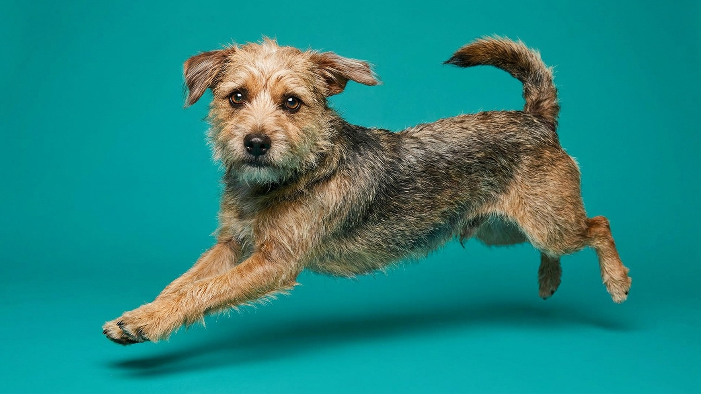

Вы напряглись перед выходом из дома — и собака уже мечется, хотя причины ещё нет. Это не совпадение: питомцы считывают наше состояние и подстраиваются под него. Исследования показывают, что уровень стресса у собаки нередко идёт в такт с хозяйским, а кошка живёт по вашим часам и настроению точнее любого будильника. Вот 5 привычек, которые питомец перенимает у вас, — и как развернуть это влияние в плюс.
🐾 У вашего питомца так же?
Расскажите в AnimaLife, как ведёт себя ваш питомец, — приложение объяснит причину и даст пошаговый план. Бесплатно, без записи к специалисту.
Разобрать свой случай → Разобрать в MAX →
У вас iPhone? AnimaLife есть в App Store
Собаки — чемпионы по «эмоциональному заражению». Когда вы напрягаетесь, у вас меняются запах, дыхание, тонус руки на поводке — и питомец мгновенно считывает тревогу как сигнал «рядом опасность». На прогулке это выливается в рывки и лай на пустом месте.
Что делать: перед сложным местом сознательно выдохните, расслабьте руку, снизьте темп. Спокойный хозяин — самый мощный «успокоитель» для собаки.
Питомцы обожают предсказуемость и быстро подстраивают внутренние часы под ваши. Встаёте в семь — кошка будит в 6:55. Работаете из дома в хаотичном графике — животное тоже теряет ритм, ест и спит вразнобой.
Стабильное время еды, прогулок и отбоя снижает тревожность питомца сильнее, чем любые игрушки. Постоянство — это язык безопасности, который он понимает.
Кошки и собаки не разбирают слова, зато безошибочно читают интонацию и мимику. Раздражённый тон, резкие движения, хлопанье дверьми держат питомца в фоновом напряжении, даже если вы сердитесь не на него.
Ровный доброжелательный голос и спокойные жесты работают как ежедневная терапия. Особенно это важно для животных из приюта — они считывают обстановку с удвоенной чуткостью.
🐾 Хотите понять, что питомец говорит вам?
Опишите ситуацию или пришлите видео в AnimaLife — AI разберёт поведение вашего питомца и подскажет, что делать. Бесплатно, ответ за минуту.
Разобрать поведение → Разобрать в MAX →
У вас iPhone? AnimaLife есть в App Store
🐾 Понравился разбор?
Подпишитесь на канал — каждый день разбираем по одному тревожному симптому у кошек и собак: что в пределах нормы, а когда пора к врачу. Подпишитесь, чтобы не пропустить разбор, который может спасти здоровье вашего питомца.
Малоподвижный хозяин — чаще всего малоподвижный питомец. Если вечера проходят на диване, а угощение со стола стало ритуалом, животное быстро набирает вес вместе с вами. Питомец не решает, сколько ему двигаться и есть, — это решаете вы.
Разверните привычку в плюс: вечерняя прогулка или активная игра полезны обоим, а лакомство легко заменить пятью минутами внимания.
Как вы встречаете звонок в дверь, курьера, чужую собаку — так постепенно учится реагировать и питомец. Ваша настороженность закрепляется как «правильная» модель, а спокойное дружелюбие — как «всё в порядке».
Вывод простой: питомец — это во многом зеркало. Хорошая новость в том, что зеркало можно настроить. Начните с себя — со спокойствия, режима и ровного тона, — и поведение животного подтянется следом. Если тревога у питомца стойкая и мешает жить, обсудите её с ветеринаром или зоопсихологом.